Übung 6 - Katapultbelagerung
In dieser Übung wollen wir den Arm des in Übung 1 modellierten Katapults animieren und Physiksimulation nutzen, um ein Geschoss zu werfen.
Vorbereitung

-
Öffnet euer Katapult. Falls ihr im Laufe der Übung feststellt, dass sich euer Modell nicht für die Aufgabe eignet, könnt ihr dieses Beispielmodell verwenden.
-
Da wir in dieser Übung mit Physik arbeiten, sind die richtigen Maße des Katapults wichtig. Öffnet dafür mit
Ndie Sidebar. Skaliert nun euer Katapult, bis es realistische Maße hat, die unter Dimensions für das aktive Objekt angezeigt werden. -
Fügt eine Kugel als Ladung für das Katapult hinzu und färbt sie mit einem Material entsprechend ein. Positioniert sie abschussbereit auf dem Katapult.
1. Arm animieren
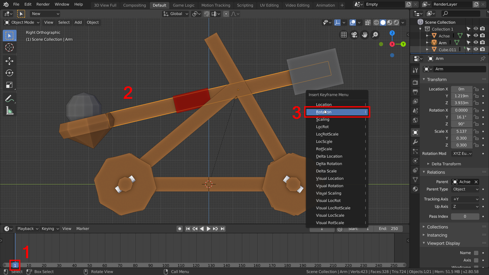
-
Springt in der Timeline unten zu Frame 1 [1]. Zum Verschieben des aktiven Frames, könnt ihr die
←→Tasten oder die rechte Maustaste benutzen. -
Markiert den Arm des Katapults, oder die Achse mit der sich der damit verbundene Arm drehen lässt [2] (siehe Übung 1.1 Punkt 3).
-
Drückt in der 3D Ansicht
i, um einen Keyframe für die Rotation des Armes hinzuzufügen.
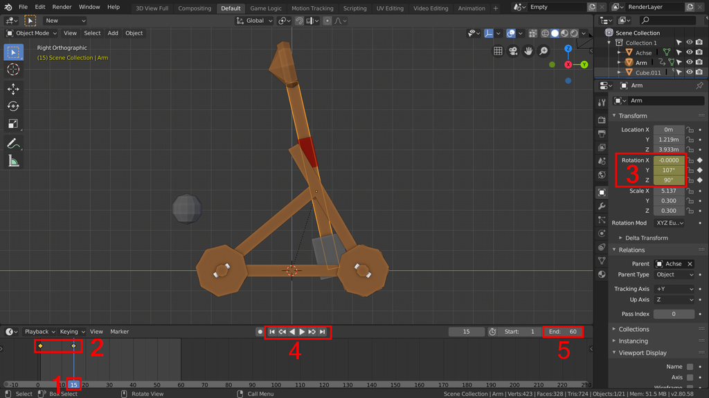
-
Springt nun einige Frames nach vorne (standardmäßig entsprechen 24 Frames einer Sekunde). Die Bewegung des Armes soll recht schnell sein, deshalb wurden in diesem Beispiel 15 Frames verwendet [1].
-
Dreht den Arm nun so, wie er am Ende der Animation stehen soll.
-
Setzt erneut einen Keyframe für die Rotation.
- Nun sollten in der Timeline zwei orangene Punkte, die Keyframes repräsentieren erschienen sein [2]. Diese könnt ihr auch im Nachhinein noch verschieben. Selekteren und Verschieben der Keyframes mit der linken Maustaste.
-
In den Transform Ansicht des Objekts [3] seht ihr nun, dass sich die Werte bei Rotation gelb bzw. grün verfärbt haben.
-
Grün bedeutet, dass der Wert animiert ist,
-
Gelb bedeutet, dass der Wert im aktiven Frame einen Keyframe hat.
-
Die Animation kann mit
Leeroder den Player Controlls in der Timeline [4] abgespielt werden. Ist die Animation zu lang, kann der End-Frame [5] verändert werden. In diesem Beispiel waren z.b. 60 Frames genug für die ganze Animation.
2. Graph Editor
Standardmäßig werden Bewegungen in Blender mithilfe von Bezierkurven weich dargestellt. Somit läuft die Bewegung des Katapultarms langsam an und läuft am Ende langsam wieder aus:
Da wir den Arm jedoch abrupt stoppen lassen wollen, müssen wir die Beziekurve entsprechend editieren:
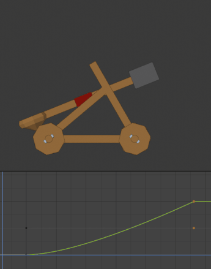
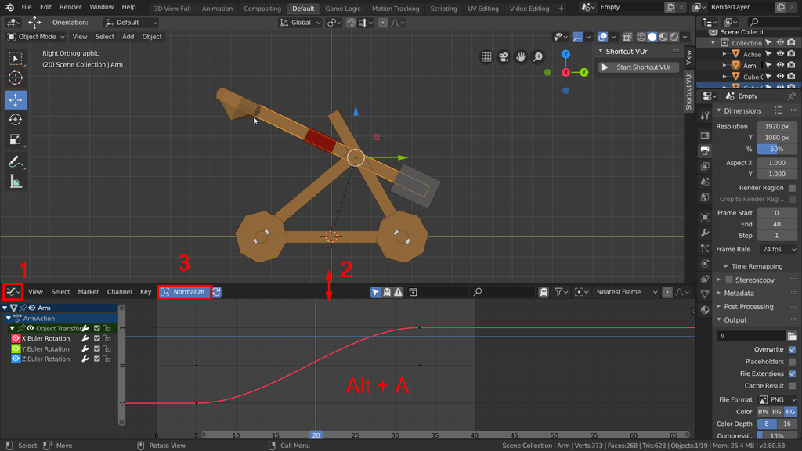
- Stellt nun den Timeline Editor auf den Graph Editor [1] um und zieht den Bereich etwas größer [2]
- Aktiviert Normalize [3], um die Kurven besser anzeigen zu lassen.
- Deselektiert im Graph Editor alle Keyframes mit
Alt + A - Selektiert nun die Keyframes auf der rechten Seite (z.b. mit
Bfür Box Select) - Skaliert diese auf der X Achse mit 0. Drückt dafür
S,X,0

3. Physik simulieren
3.1 Geschoss
Im nächsten Schritt soll das Geschoss mit Physik simuliert werden.
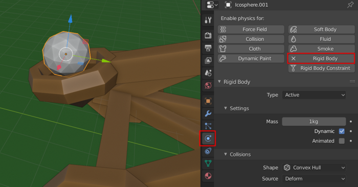
- Markiert das Geschoss.
- Wechselt im Properties Editor zum Physics Tab.
- Fügt der Kugel einen Rigid Body hinzu [1].
3.2 Arm
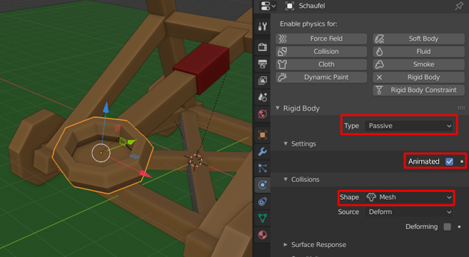
- Markiert die “Schaufel” des Katapults (das Objekt, auf dem die Kugel zu Beginn der Animation aufliegt).
- Fügt der Schaufel auch einen Rigid Body hinzu, stellt nun jedoch Type auf Passive [2] (Die Schaufel soll nicht mit Physik bewegt werden, sondern nur andere Objekte - hier die Kugel - beeinflussen).
- Stellt die Collision Shape der Schaufen von Convex Hull auf Mesh um.
- Aktiviert zudem Animated im Rigid Body der Schaufel [3].
Die Kollisionsform (Collision Shape) umzustellen ist wichtig, damit die Kugel nicht aus der Schaufel herausrollt. Convex Hull erzeugt als Kollisionsform eine Hülle um das Mesh, dass Vertiefungen nicht beachtet. Das ist performant, aber hierfür zu ungenau. Mesh verwendet die tatsächliche Form des Meshes. 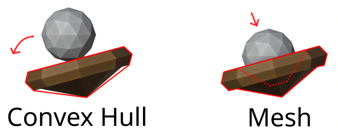
3.3 Physics Einstellungen
- Probiert aus, was beim Abspielen der Animation passiert. Wenn Die Kugel durch die Schaufel durchfällt, aktiviert im Properties Editor → Scene Tab → Rigid Body World → Split Impulse.
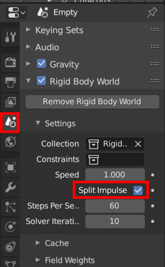
Falls ihr nun bemerkt, dass ihr die Drehbewegung des Katapults nochmal anpassen müsst, springt einfach an die Positionen der entsprechenden Keyframes, dreht den Arm in eine neue Position und überschreibt den Keyframe (so wie man ihn auch setzt mit
i)
4. Kamera Constraint
Nun wollen wir die Kamera dem Geschoss folgen lassen.
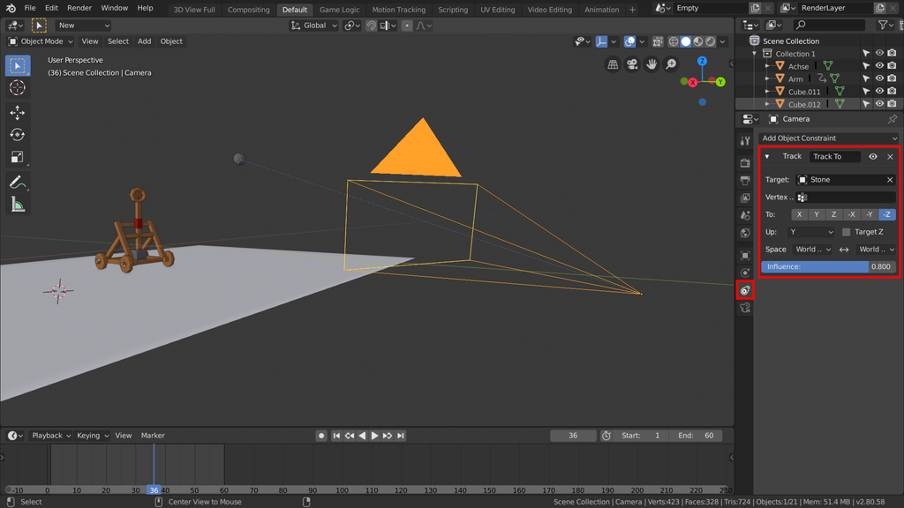
- Fügt eine Kamera hinzu, falls noch keine in der Szene ist.
- Platziert die Kamera in der Szene - z.b. an der Stelle, an der das Geschoss landet.
- Fügt der Kamera im Properties Editor → Constraints einen Track To Constraint hinzu.
- Wählt als Target euer Geschoss aus
- Stellt für “*To:” -Z und für “Up:” Y ein.
- Um Die Kamerabewegung nicht so statisch erscheinen zu lassen, stellt Influence auf einen niedrigeren Wert als 1.0.
- Mit
Numpad 0oder dem Kamerasymbol oben rechts, könnt ihr bei Bedarf in die Kameraansicht wechseln.
Da die Kamera in ihrem Lokalen Achsensystem die Richtung -Z als “Vorwärts” festgelegt hat und ihre Y Achse nach oben zeigt, werden diese Werte für den Constraint verwendet. 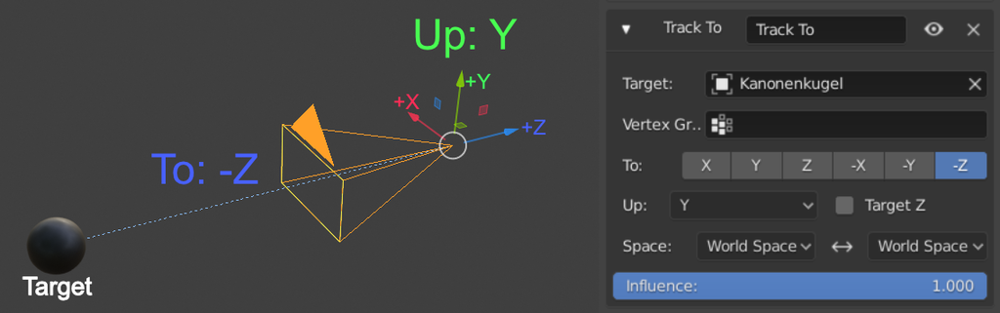
5. Rendern
5.1 Freiwillig - Materialien und Licht
- Fügt den Objkten Materialien hinzu und Beleuchtet die Szene wie in Übung 5 gelernt (Freiwillig)
5.2 Videodatei Ausgeben
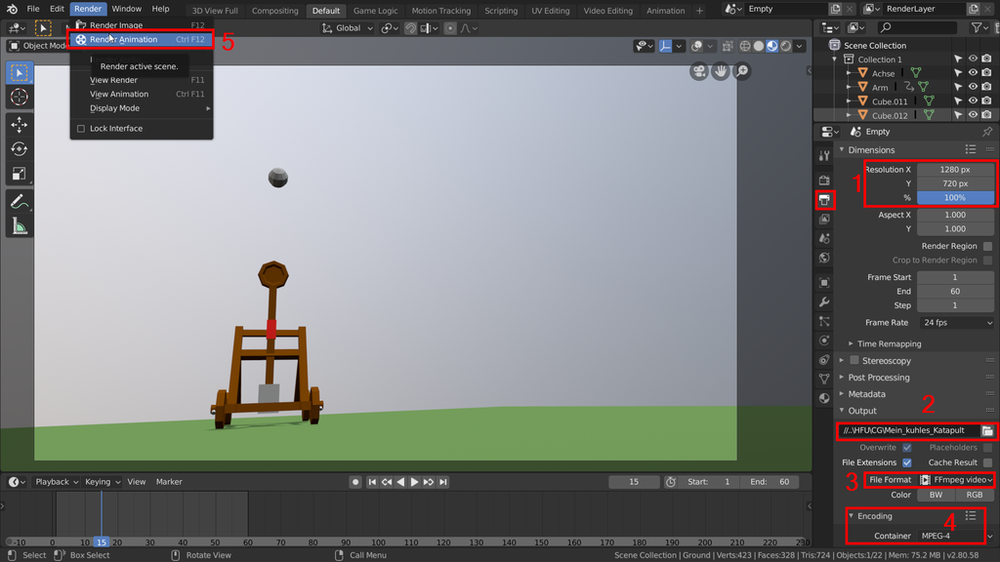
- Wechselt zum Output Tab des Properties Editors.
- Gebt als Auflösung 1280 * 720 an (100%) [1]
- Gebt einen Pfad an, an dem eure Videodatei ausgegeben werden soll [2]
- Gebt als Format FFmpeg video an [3]
- Stellt unter Encoding als Container MPEG-4 ein [4]. (.mp4 damit das Video im Browser abgespielt werden kann)
- Klickt nun Render → Render Animation um die Szene zu rendern und die Videodatei am angegebenen Pfad abzuspeichern [5].
Abgabe
Die Abgabe besteht aus der .blend Datei, sowie der gerenderten Animation als .mp4 Video.
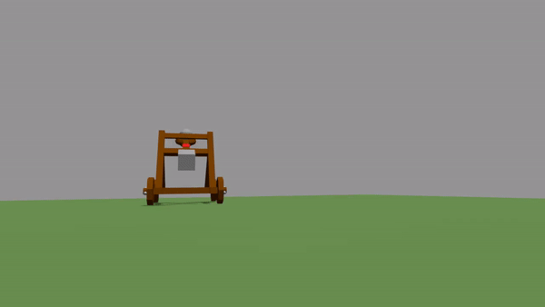
Ressourcen & Tutorials zum Thema
| Art/Länge | Titel | Thema | Quelle |
|---|---|---|---|
| 7:40 | Keyframes - Blender 2.80 Fundamentals | Animation | YouTube - Blender (offizieller Kanal) |
| 10:12 | Graph Editor - Blender 2.80 Fundamentals | Animation | YouTube - Blender (offizieller Kanal) |
| 14:27 | Timeline - Blender 2.80 Fundamentals | Animation | YouTube - Blender (offizieller Kanal) |
| 8:34 | Dopesheet - Blender 2.80 Fundamentals | Animation | YouTube - Blender (offizieller Kanal) |
| 13:28 | Introduction to Animation - Blender 2.8 Beginner Tutorial (Eevee) | Animation | YouTube - chocofur |
| 20:41 | Blender 2.8 Beginner Tutorial - Part 12: Rigid Body Simulation | Physiksimulation | YouTube - CG Boost |
Gelerntes
| Funktion | Kontext | Shortcut |
|---|---|---|
| Keyframe setzen | / | i |
| Aktiven frame verschieben | / | ← → |
| Animation abspielen | / | Leer |